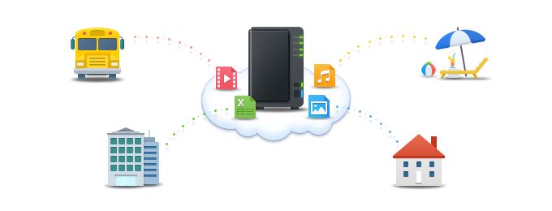

Accedere a Synology NAS da Internet e condividere i file

Panoramica
Con QuickConnect, è possibile connettersi facilmente alla Synology NAS da Internet senza dover impostare le regole di invio porta o altre impostazioni di rete complicate. Con QuickConnect è possibile connettersi tramite un indirizzo facilmente personalizzabile come Quickconnect.to/example.
1. Configura QuickConnect
- Andare su Pannello di controllo > QuickConnect.
- Selezionare la casella Abilita QuickConnect.

- Se non si dispone di un account Synology, fare clic su Accedere o registrare un account Synology. Inserire le informazioni necessarie e fare clic su OK. Se si dispone già di un account Synology, inserire le informazioni dell'account.

- Creare il QuickConnect ID nel campo QuickConnect ID. Quindi fare clic su Applica.

- Verranno visualizzate le informazioni sul collegamento QuickConnect. Utilizzare questi collegamenti per accedere a Synology NAS. In questo esempio, l'indirizzo per DSM è http://Quickconnect.to/YourID.

- Se non si visualizza il collegamento DSM QuickConnect è possibile fare clic su Avanzate e assicurarsi che DSM sia abilitato.

- Adesso è possibile utilizzare il collegamento DSM QuickConnect per accedere a Synology NAS.

2. Condividere file su NAS utilizzando QuickConnect
Abilitando QuickConnect è possibile condividere facilmente i file archiviati su Synology NAS con chiunque senza alcuna preoccupazione relativa all'invio porta.
- Prima abilitare la connessione HTTPS per condividere i file in modo sicuro. Andare su Pannello di controllo > Rete.
- Fare clic sulla casella Abilita connessione HTTPS, quindi fare clic su Applica.

- Abilitare quindi la condivisione di file per QuickConnect. Andare su Pannello di controllo > QuickConnect.
- Fare clic su Avanzate e assicurarsi che la casella di Condivisione file abbia il segno di spunta.

Nota:
Quando vengono configurate impostazioni QuickConnect avanzate, si consiglia di accedere a DSM con l'utilizzo di un indirizzo IP locale o del nome di dominio del Synology NAS.
- Si può ora condividere file utilizzando QuickConnect. Aprire File Station e fare clic con il destro sul file o sulla cartella da condividere. Quindi fare clic su Condividi collegamenti file nel menu contestuale.

- Viene creato un collegamento per la condivisione del file. Condividere questo collegamento con la famiglia e gli amici per scaricare la cartella/file.